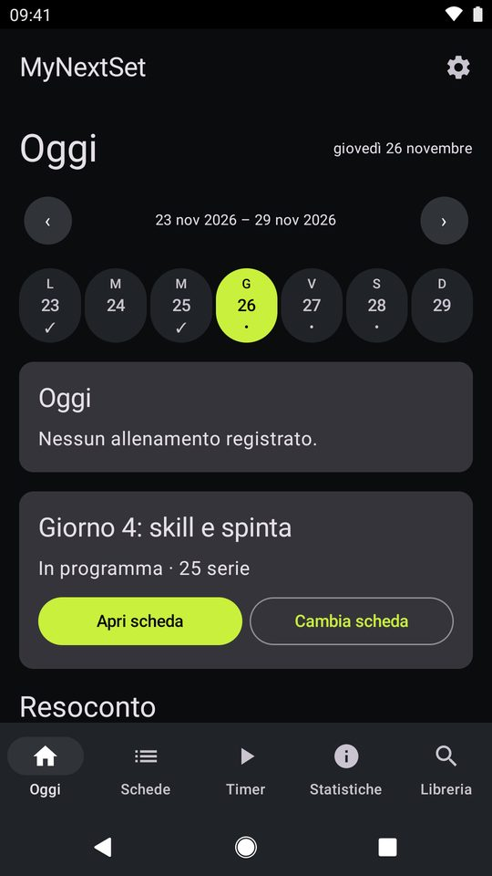
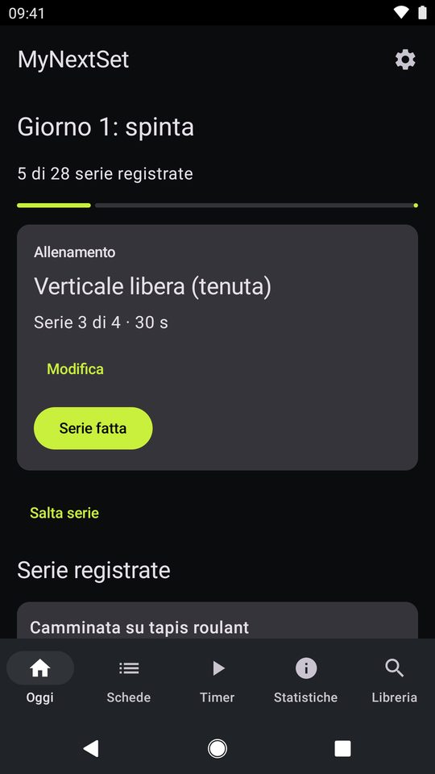
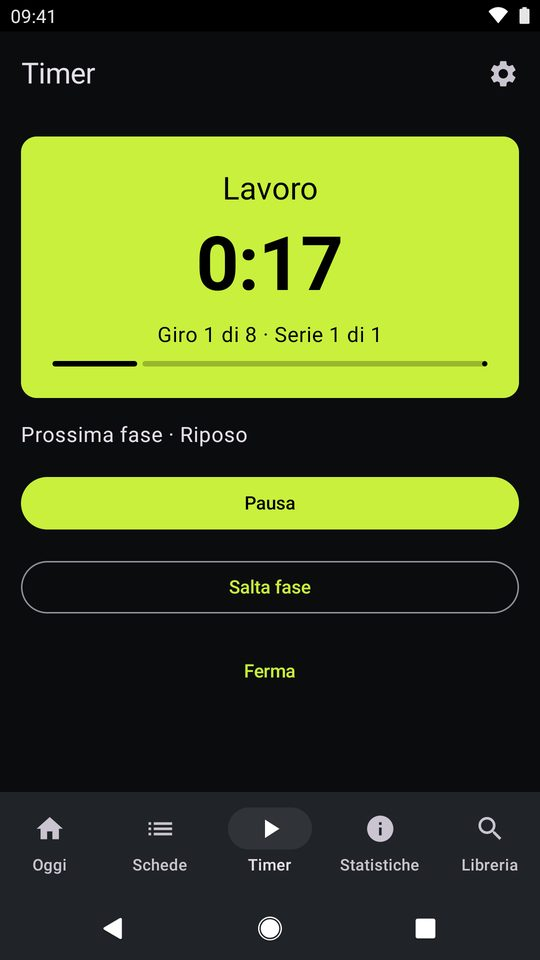
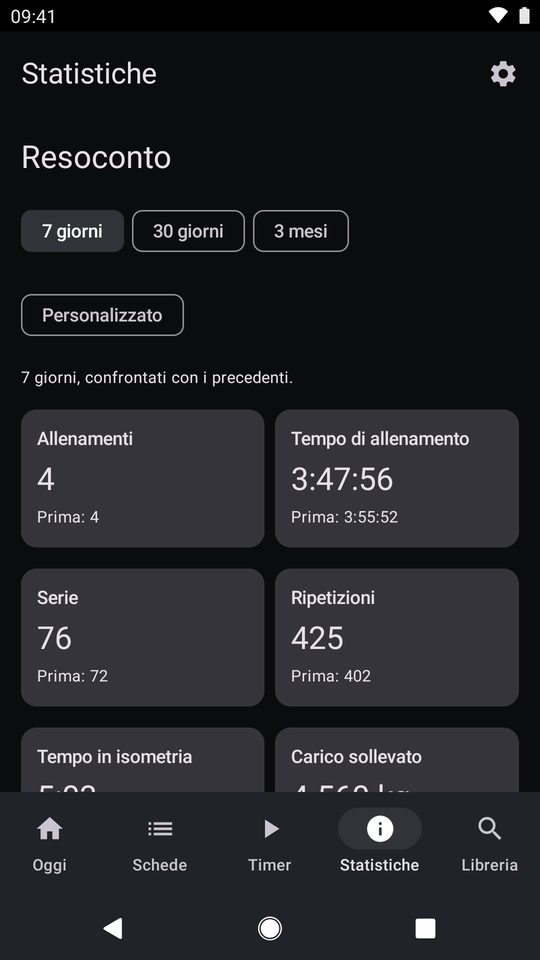

MyNextSet
Schede di allenamento e timer Tabata
English
Il tuo allenamento, una serie alla volta
MyNextSet è l'app per iPhone, iPad e Android per creare le schede di allenamento, seguire ogni serie con il recupero guidato e allenarti con il timer Tabata. Non serve un account e non c'è pubblicità: i dati restano sul tuo dispositivo.
Presto suApp Store
Presto suGoogle Play




Cosa puoi fare
- Oggi: la scheda in programma, il calendario della settimana e gli allenamenti svolti.
- Schede e programmi: riscaldamento, allenamento e stretching; serie normali, superset, jumpset, dropset, cluster e serie composte; programmi con le date e le schede associate.
- Allenamento guidato: registra ripetizioni, carichi e tempi di ogni serie, con il recupero che parte da solo.
- Importa con l'AI: trasforma la foto o il PDF della tua scheda in una scheda di MyNextSet, con anteprima prima del salvataggio.
- Timer Tabata: lavoro, riposo, giri e serie, circuiti con più Tabata, segnale prima del cambio di fase e timer salvati.
- Statistiche: resoconto per periodo, record e progressi per esercizio.
- Libreria: esercizi pronti per calisthenics e palestra, e i parametri che vuoi registrare.
- File JSON: esporta e condividi schede, libreria e allenamenti svolti.
- Temi e suoni: verde lime, blu o rosa fluo, e diversi toni di allarme.
Importare una scheda da una foto
- In MyNextSet apri Schede → Importa con l'AI e copia il prompt.
- Incollalo nella chat AI che preferisci, insieme alla foto o al PDF della scheda.
- Incolla la risposta in MyNextSet, controlla l'anteprima e salva.
MyNextSet non si collega a nessun servizio AI: sei tu a scegliere la chat e cosa condividere.
Privacy
MyNextSet non raccoglie dati personali, non usa pubblicità né strumenti di tracciamento e non richiede registrazione. Tutto quello che inserisci resta sul tuo dispositivo.
Lingue
L'app è in italiano e in inglese e segue la lingua del telefono.